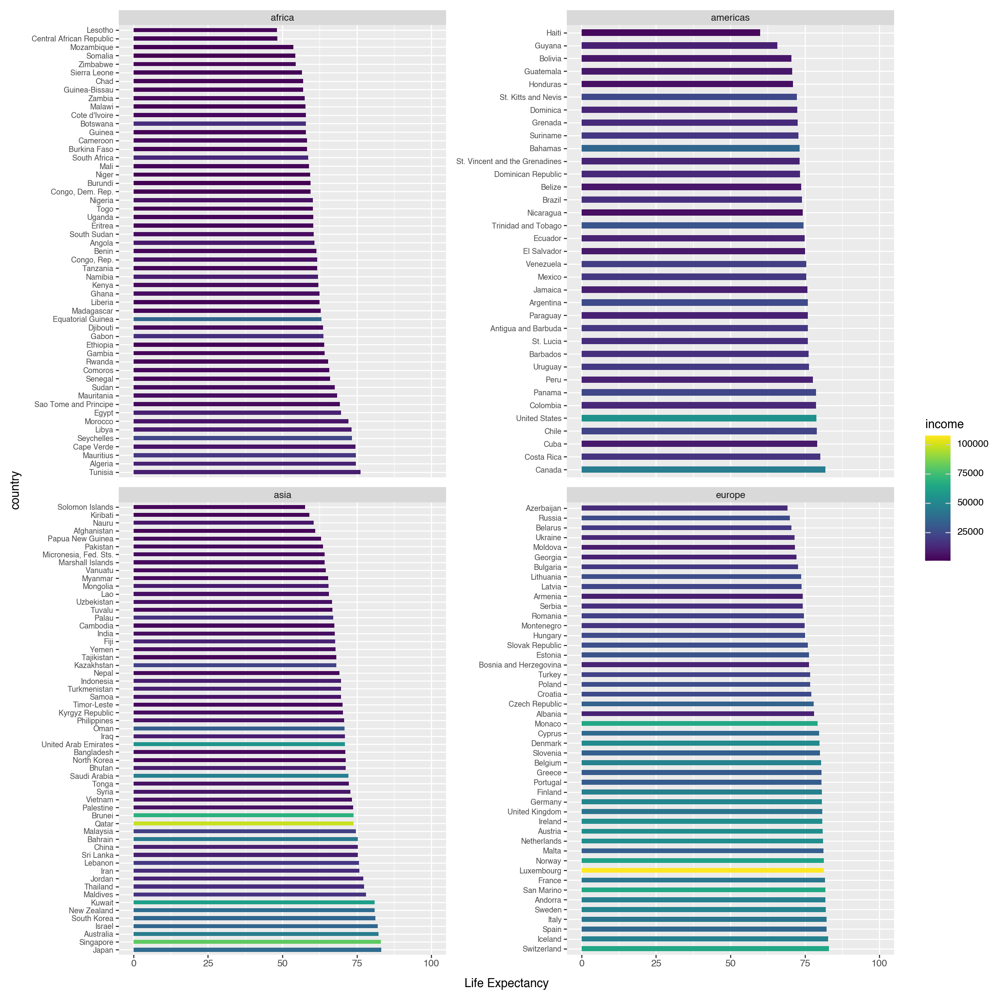
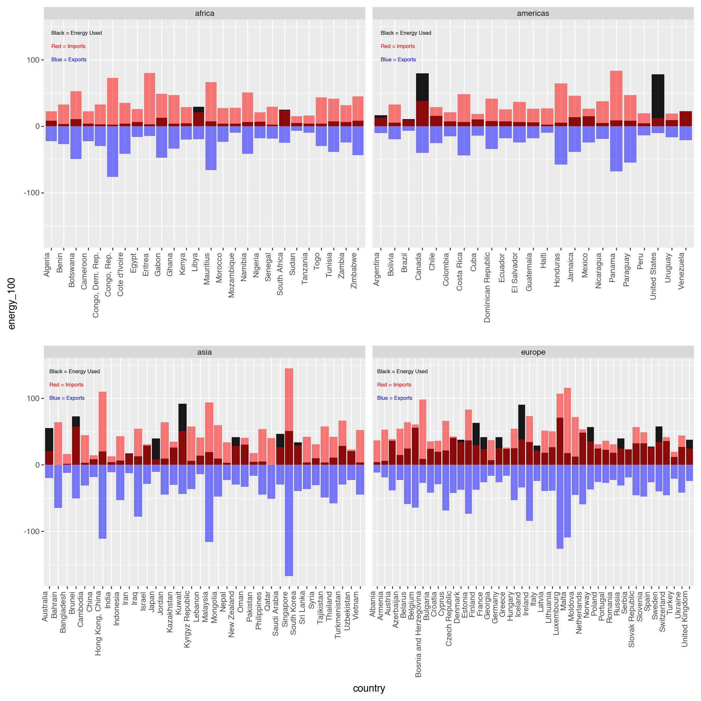
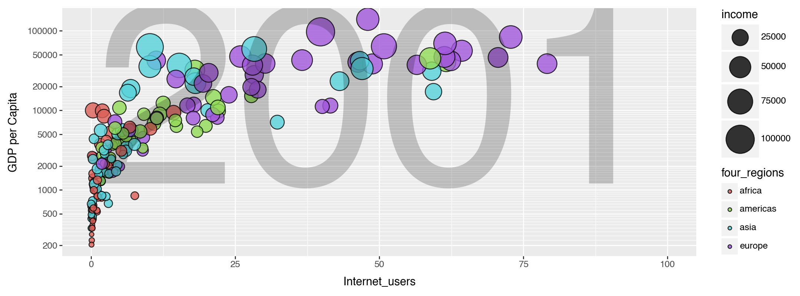
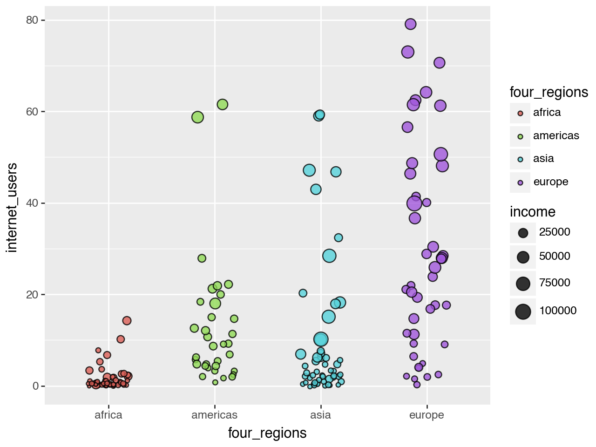

Code
import pandas as pd
import plotnine as p9
import numpy as npimport pandas as pd
import plotnine as p9
import numpy as npy = Life expectancy, x = Income, color = region, and size = population.
df1 = pd.read_csv('/Users/marvinlee/Documents/vs_code/gsb_544/lab/lab_1/q1data.csv')
df1 = df1.dropna()
df1.head()| income | life_exp | population | year | country | four_regions | six_regions | eight_regions | world_bank_region | |
|---|---|---|---|---|---|---|---|---|---|
| 0 | 1910.0 | 61.0 | 29200000.0 | 2010 | Afghanistan | asia | south_asia | asia_west | South Asia |
| 1 | 11100.0 | 78.1 | 2950000.0 | 2010 | Albania | europe | europe_central_asia | europe_east | Europe & Central Asia |
| 2 | 11100.0 | 74.7 | 36000000.0 | 2010 | Algeria | africa | middle_east_north_africa | africa_north | Middle East & North Africa |
| 3 | 46900.0 | 81.9 | 84500.0 | 2010 | Andorra | europe | europe_central_asia | europe_west | Europe & Central Asia |
| 4 | 7680.0 | 60.8 | 23400000.0 | 2010 | Angola | africa | sub_saharan_africa | africa_sub_saharan | Sub-Saharan Africa |
[p9.ggplot(df1) +
p9.geom_point(p9.aes(x = "income", y= "life_exp",fill = "four_regions", size = "population"), alpha = 0.8) +
p9.scale_x_log10(breaks = [500, 1000, 2000, 4000, 8000, 16000, 32000, 64000]) + # not a regular scale; suggested by ChatGPT
p9.scale_size(range=(2, 20)) + # make all points bigger
p9.theme(figure_size=(10.8, 4.0)) +
p9.guides(size = "none")+ # suggested by Kyle
p9.labs(x = "Income", y ="Life Expectancy")+
p9.annotate("text", x = 10000, y = 60, label = "2010", size = 250, color = "black", alpha =0.2) # suggested by Kyle
]/opt/anaconda3/lib/python3.12/site-packages/IPython/lib/pretty.py:779: FutureWarning: Using repr(plot) to draw and show the plot figure is deprecated and will be removed in a future version. Use plot.show().
The horizontal bar chart below shows the same infomation as the scatterplot. The setback is that the correlation between income and life expectancy is not as obvious as the scattor plot. The coloring scale does show that rich countries where the bars are yellow tend to have longer bars. The advantage of this graph is that this bar chart clearly lists each country compared to the overlapping scatter plot in part 1.
df1['country'] = pd.Categorical(df1['country'], categories=df1.sort_values('life_exp', ascending=False)['country']) # sort by life_expct suggested by Chat
[p9.ggplot(df1) +
p9.aes(x = "country", y = "life_exp", fill = "income") +
p9.geom_bar(stat="identity",width=0.5) +
p9.coord_flip() +
p9.theme(figure_size=(12.8, 12.8),
axis_text_y=p9.element_text(size= 7)) +
p9.labs(y ="Life Expectancy") +
p9.ylim(0, 100) +
p9.facet_wrap('~four_regions', scales='free_y', ncol=2) # facet by regions without countries that don not belong to it suggested by ChatGPT
]/opt/anaconda3/lib/python3.12/site-packages/IPython/lib/pretty.py:779: FutureWarning: Using repr(plot) to draw and show the plot figure is deprecated and will be removed in a future version. Use plot.show().
y = Imports% of GDP, x = Exports% of GDP, color = region, and size = energy.
df2 = pd.read_csv('/Users/marvinlee/Documents/vs_code/gsb_544/lab/lab_1/q2data.csv')
df2 = df2.dropna()
df2.info()
df2['energy'] = df2['energy'].str.replace('k', '000', regex=False)
df2["energy"] = df2["energy"].astype(float)<class 'pandas.core.frame.DataFrame'>
Index: 127 entries, 1 to 205
Data columns (total 9 columns):
# Column Non-Null Count Dtype
--- ------ -------------- -----
0 imports 127 non-null float64
1 exports 127 non-null float64
2 energy 127 non-null object
3 year 127 non-null int64
4 country 127 non-null object
5 four_regions 127 non-null object
6 six_regions 127 non-null object
7 eight_regions 127 non-null object
8 world_bank_region 127 non-null object
dtypes: float64(2), int64(1), object(6)
memory usage: 9.9+ KB[p9.ggplot(df2) +
p9.geom_point(p9.aes(x = "exports", y= "imports",fill = "four_regions", size = "energy"), alpha = 0.8) +
p9.theme(figure_size=(10.8, 4.0)) +
p9.ylim(0, 400) +
p9.xlim(0, 220) +
p9.labs(x = "Exports(\% of GDP)", y ="Imports(\% of GDP)")+
p9.scale_size(range=(2,15))
]<>:6: SyntaxWarning: invalid escape sequence '\%'
<>:6: SyntaxWarning: invalid escape sequence '\%'
<>:6: SyntaxWarning: invalid escape sequence '\%'
<>:6: SyntaxWarning: invalid escape sequence '\%'
/var/folders/m1/tx6ck0f962jd1hq4ch5phg_80000gn/T/ipykernel_49804/494127581.py:6: SyntaxWarning: invalid escape sequence '\%'
/var/folders/m1/tx6ck0f962jd1hq4ch5phg_80000gn/T/ipykernel_49804/494127581.py:6: SyntaxWarning: invalid escape sequence '\%'
/opt/anaconda3/lib/python3.12/site-packages/IPython/lib/pretty.py:779: FutureWarning: Using repr(plot) to draw and show the plot figure is deprecated and will be removed in a future version. Use plot.show().
Using a mirror bar graph to showcase the same idea. Muliplying all export values by -1. Down scaling energy usage to per 100 unit usage to mach the y value. Need to creat a legend by hand due to not using categorical value for the fill argument.
df2["neg_exports"] = df2["exports"] * -1
df2["energy_100"] = df2["energy"] / 100[p9.ggplot(df2) +
p9.aes(x="country") +
p9.geom_bar(p9.aes(y="energy_100"), stat="identity", fill="black", alpha =0.9) +
p9.geom_bar(p9.aes(y="imports"), stat="identity", fill="red", alpha = 0.5) +
p9.geom_bar(p9.aes(y="neg_exports"), stat="identity", fill="blue", alpha = 0.5) +
p9.facet_wrap('~four_regions', scales='free_x', ncol=2) +
p9.theme(figure_size=(10.8, 10.8),
axis_text_x=p9.element_text(angle=90, hjust=1)) +
p9.annotate("text", x=1, y=140, label="Black = Energy Used", color="black", size=6, ha='left') + # using anotation instead of a legend; code suggested by Chat
p9.annotate("text", x=1, y=120, label="Red = Imports", color="red", size=6, ha='left') +
p9.annotate("text", x=1, y=100, label="Blue = Exports", color="blue", size=6, ha='left')
]/opt/anaconda3/lib/python3.12/site-packages/IPython/lib/pretty.py:779: FutureWarning: Using repr(plot) to draw and show the plot figure is deprecated and will be removed in a future version. Use plot.show().
y = GDP per capita, x = Individual using internet, color = region, and size = income.
df3 = pd.read_csv('/Users/marvinlee/Documents/vs_code/gsb_544/lab/lab_1/q3data.csv')
df3 = df3.dropna()
df3.info()<class 'pandas.core.frame.DataFrame'>
Index: 181 entries, 0 to 214
Data columns (total 9 columns):
# Column Non-Null Count Dtype
--- ------ -------------- -----
0 internet_users 181 non-null float64
1 gdp 181 non-null float64
2 income 181 non-null float64
3 year 181 non-null int64
4 country 181 non-null object
5 four_regions 181 non-null object
6 six_regions 181 non-null object
7 eight_regions 181 non-null object
8 world_bank_region 181 non-null object
dtypes: float64(3), int64(1), object(5)
memory usage: 14.1+ KB[p9.ggplot(df3) +
p9.geom_point(p9.aes(x = "internet_users ", y= "gdp",fill = "four_regions", size = "income"), alpha = 0.8) +
p9.theme(figure_size=(10.8, 4.0)) +
p9.xlim(0, 100) +
p9.scale_y_log10(breaks = [200, 500, 1000, 2000, 5000, 10000, 20000, 50000, 100000]) +
p9.labs(x = "Internet_users", y ="GDP per Capita")+
p9.scale_size(range=(2,15)) +
p9.annotate("text", x = 50, y = 8000, label = "2001", size = 250, color = "black", alpha =0.2)
]/opt/anaconda3/lib/python3.12/site-packages/IPython/lib/pretty.py:779: FutureWarning: Using repr(plot) to draw and show the plot figure is deprecated and will be removed in a future version. Use plot.show().
Using a jitter plot to illustrate the same idea with out overlapping the plots although location of the plots are not precise.
[p9.ggplot(df3) +
p9.aes(x = "four_regions", y= "internet_users ",fill = "four_regions", size = "income") +
p9.geom_jitter(width=0.2, height=0.2, alpha = 0.8)
]/opt/anaconda3/lib/python3.12/site-packages/IPython/lib/pretty.py:779: FutureWarning: Using repr(plot) to draw and show the plot figure is deprecated and will be removed in a future version. Use plot.show().